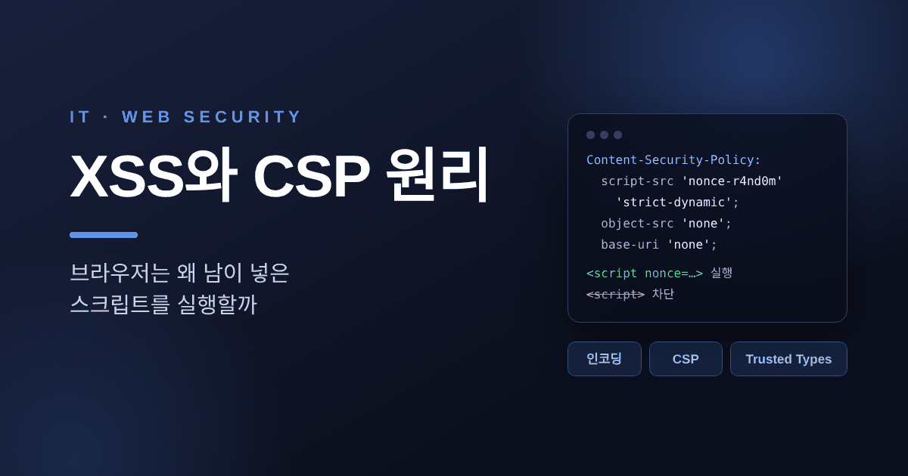
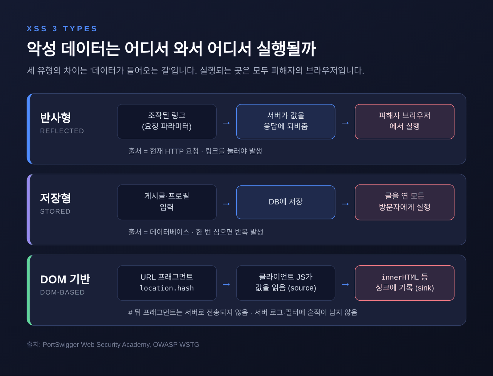
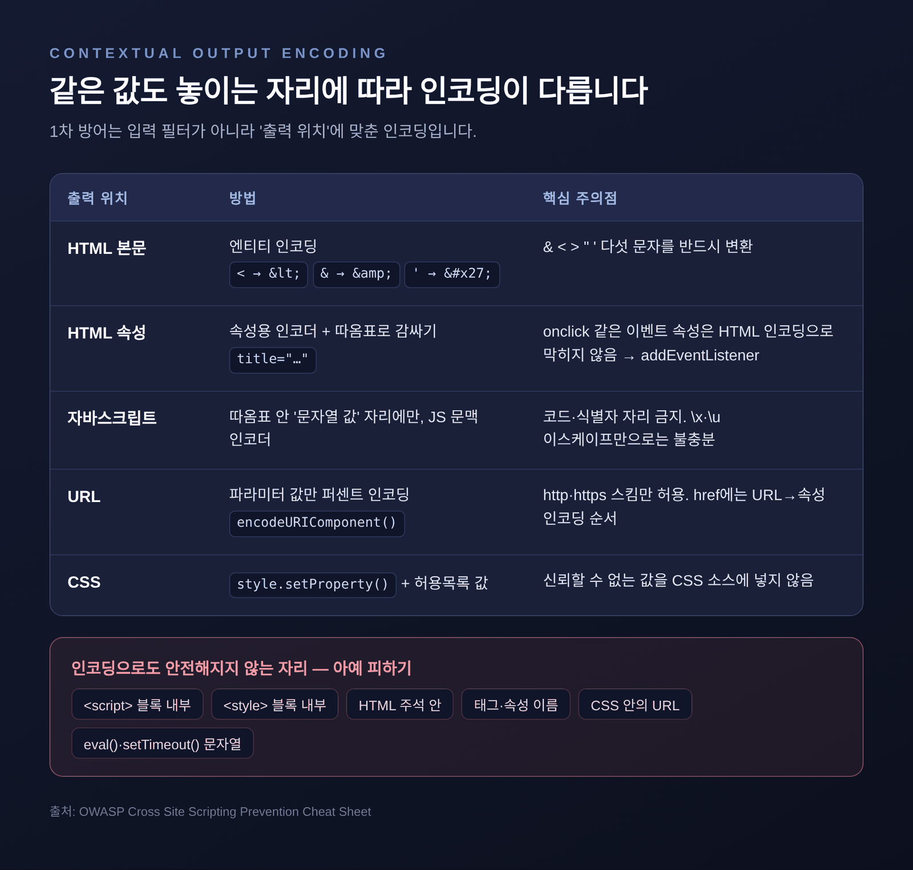
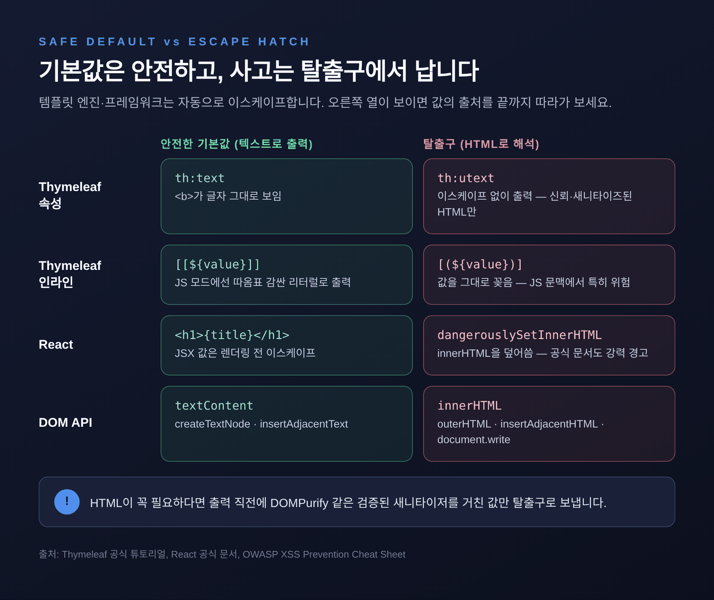
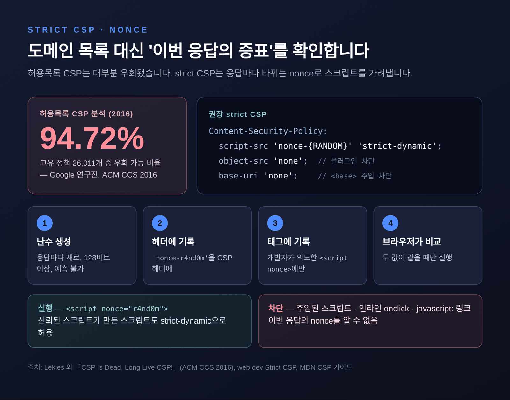
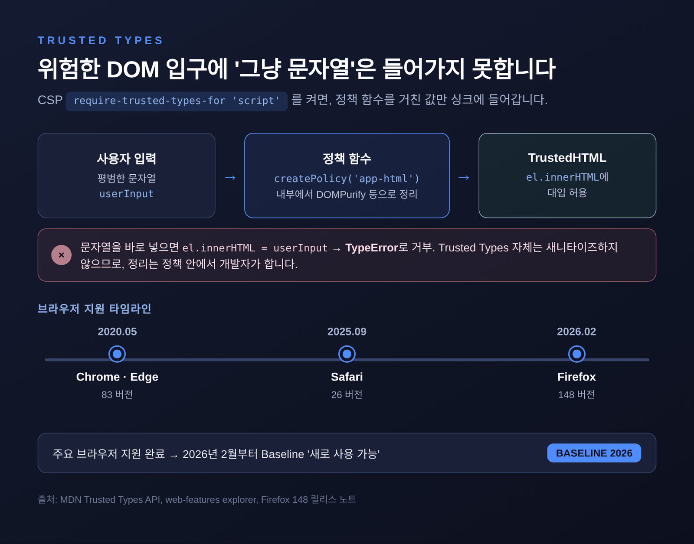
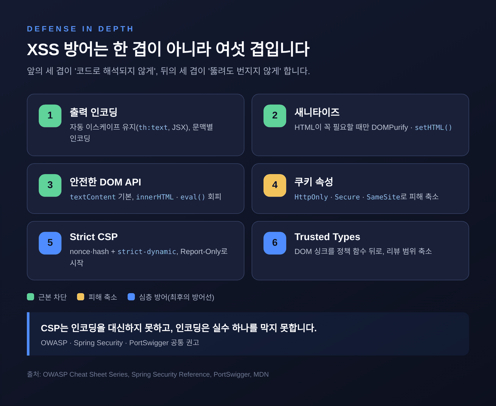

XSS와 CSP 원리 — 브라우저는 왜 남이 넣은 스크립트를 실행할까

이번 글에서는 XSS(크로스 사이트 스크립팅)가 생기는 원리와, 이를 막는 출력 인코딩·콘텐츠 보안 정책(CSP)·Trusted Types를 차례로 정리해 보겠습니다. 공격 기법보다는 "브라우저가 데이터를 코드로 착각하는 순간"이 언제인지에 초점을 맞췄습니다. 스프링과 Thymeleaf를 쓰는 분들이 바로 점검할 수 있는 지점도 함께 짚었습니다.
먼저 세 줄 요약입니다.
- XSS는 신뢰할 수 없는 데이터가 HTML·자바스크립트 문맥에 섞여 코드로 해석될 때 생깁니다. 1차 방어는 출력 위치에 맞는 인코딩입니다.
- 템플릿 엔진의 자동 이스케이프(
th:text, JSX)는 안전한 기본값입니다. 사고는 대개th:utext,dangerouslySetInnerHTML,innerHTML같은 탈출구에서 납니다. - CSP는 최후의 방어선입니다. 도메인 허용목록 대신 nonce·hash 기반의 strict CSP를 Report-Only로 시험한 뒤 강제하고, DOM 쪽은 Trusted Types로 잠급니다.
■ XSS란 무엇이고, 왜 아직도 1위일까
XSS의 본질은 한 문장으로 요약됩니다. 애플리케이션이 신뢰할 수 없는 데이터를 페이지에 넣었는데, 브라우저가 그것을 데이터가 아니라 코드로 읽는 것입니다.
여기서 "신뢰할 수 없는 데이터"의 범위는 생각보다 넓습니다. 폼 입력과 URL 파라미터는 물론, 데이터베이스에 저장된 사용자 글, 다른 서비스가 돌려준 응답까지 모두 해당합니다.
브라우저 입장에서 페이지 안의 스크립트는 전부 그 사이트가 보낸 것입니다. 그래서 주입된 스크립트는 동일 출처 정책의 보호를 그대로 누립니다. 피해자로 가장하고, 피해자가 할 수 있는 모든 행동을 하고, 피해자가 볼 수 있는 모든 데이터를 읽을 수 있습니다. 공개 안내 페이지라면 피해가 작겠지만, 금융·의료 서비스나 관리자 화면이라면 이야기가 달라집니다.
오래된 취약점인데도 순위는 내려오지 않습니다. MITRE의 2025년 CWE Top 25에서 XSS(CWE-79)는 점수 60.38로 1위였습니다. 2024년에도 1위였고, 2위인 SQL 인젝션(28.72)과의 차이도 두 배가 넘습니다. OWASP Top 10 2025에서는 XSS가 '인젝션(A05)' 범주에 묶여 있는데, 이 범주 안에서 XSS에 해당하는 CVE만 3만 건이 넘습니다. 두 지표는 집계 기준이 다르지만, 가장 흔한 웹 취약점 중 하나라는 결론은 같습니다.
■ 반사형·저장형·DOM 기반, 데이터가 들어오는 길이 다릅니다
XSS는 보통 세 갈래로 나눕니다. 차이는 악성 데이터가 어디서 와서 어디서 실행되느냐입니다.
반사형(Reflected) 은 가장 단순합니다. 요청에 담긴 값을 서버가 그 자리에서 응답에 되비춥니다. "검색 결과: ○○"처럼 검색어를 그대로 찍어 주는 화면이 전형적입니다. 공격자는 파라미터에 스크립트를 넣은 링크를 만들어 피해자가 누르게 합니다.
저장형(Stored) 은 한 번 심어 두면 계속 터집니다. 게시판 글이나 프로필 소개처럼 DB에 저장된 값이 다른 사용자 화면에 출력될 때 생깁니다. 링크를 누를 필요도 없이, 그 글을 연 모든 방문자의 브라우저에서 실행됩니다.
DOM 기반(DOM-based) 은 결함이 서버가 아니라
클라이언트 자바스크립트에 있습니다. 스크립트가
location.hash 같은 소스(source) 에서 값을
읽어 innerHTML 같은 싱크(sink) 에 그대로
씁니다. 특히 URL의 # 뒤 프래그먼트는 서버로 전송되지
않습니다. 서버 로그에도, 서버 앞단의 필터에도 흔적이 남지 않는다는
뜻입니다.
// 위험: URL 프래그먼트를 HTML로 해석해 DOM에 삽입
result.innerHTML = decodeURIComponent(location.hash.slice(1));
// 안전: 같은 값을 '글자'로만 삽입
result.textContent = decodeURIComponent(location.hash.slice(1));참고로 최신 브라우저는 innerHTML로 넣은
<script> 요소를 실행하지 않습니다. 그렇다고 안심할
수는 없습니다. 이미지의 onerror 같은 이벤트 핸들러 속성은
여전히 실행되기 때문입니다.

■ 출력 인코딩 — 같은 문자도 놓이는 자리에 따라 다르게
XSS 방어의 출발점은 입력을 거르는 것보다 출력할 때 인코딩하는 것입니다. 입력 검증도 필요하지만, 같은 값이 HTML 본문·속성·자바스크립트·URL 중 어디에 놓이느냐에 따라 위험한 문자가 달라지기 때문입니다.
OWASP XSS 방지 치트시트가 정리한 규칙은 이렇습니다.
| 출력 위치 | 원칙 |
|---|---|
| HTML 본문 | & < >
" '를 &
< > "
'로 엔티티 인코딩 |
| HTML 속성 | 값을 반드시 따옴표로 감싸고 속성용 인코더 사용. onclick
같은 이벤트 속성에는 넣지 않음 |
| 자바스크립트 | 따옴표로 감싼 문자열 '값' 자리에만, 그 문맥용 인코더로. 코드·식별자 자리는 금지 |
| URL | 파라미터 값만 %HH로
인코딩(encodeURIComponent). 스킴은 http·https만 허용 |
| CSS | 신뢰할 수 없는 값을 CSS 소스에 넣지 않음.
style.setProperty()와 허용목록 값 사용 |
이 표에서 눈여겨볼 부분은 "인코딩으로도 안전해지지 않는 자리"가
있다는 점입니다. <script> 블록 안에 값을 직접 끼워
넣거나, HTML 주석·태그 이름·eval()의 문자열 인자에 넣는
경우가 그렇습니다. 치트시트는 이런 자리를 아예 피하라고 권합니다.
16진수나 유니코드 이스케이프만 기계적으로 적용한다고 해결되지 않는다는
경고도 덧붙입니다.
자바스크립트로 DOM을 다룰 때도 같은 원리가 적용됩니다.
textContent, createTextNode(),
insertAdjacentText(), 고정된 속성명의
setAttribute()는 값을 글자로만 다룹니다. 반대로
innerHTML, outerHTML,
insertAdjacentHTML, document.write()는 값을
HTML로 해석합니다. 글자를 넣을 자리라면 앞쪽 API를 고르는 것만으로도
상당수의 DOM 기반 XSS가 사라집니다.
사용자가 서식 있는 HTML을 직접 작성해야 하는 경우, 예를 들어 게시판 에디터라면 인코딩이 서식을 깨뜨립니다. 이때는 검증된 새니타이저가 답입니다. OWASP는 DOMPurify를 권장하며, 새니타이즈한 결과를 다시 손대지 말고 라이브러리를 최신으로 유지하라고 강조합니다.

■ 템플릿 엔진의 자동 이스케이프, 그리고 탈출구
다행히 요즘 템플릿 엔진과 프레임워크는 기본값이 안전합니다. 개발자가 매번 인코딩 함수를 부르지 않아도 됩니다.
Thymeleaf 의 th:text는 값을
이스케이프해서 출력합니다. 메시지에 <b>가 들어 있어도
굵은 글씨가 아니라 <b>라는 글자가 그대로 보입니다.
태그를 살리고 싶을 때 쓰는 것이 th:utext(unescaped
text)입니다. 바로 이 지점이 스프링 프로젝트에서 가장 먼저 확인해 볼
곳입니다.
<!-- 안전: 이스케이프된 텍스트 -->
<p th:text="${comment.body}">댓글</p>
<!-- 주의: 신뢰된 HTML일 때만. 사용자 입력이면 새니타이즈가 먼저 -->
<div th:utext="${post.sanitizedHtml}">본문</div>인라인 표현식도 같은 구분을 따릅니다. [[...]]는
이스케이프된 출력, [(...)]는 이스케이프 없는 출력입니다.
th:inline="javascript" 블록 안에서 [[...]]는
값을 따옴표로 감싼 자바스크립트 리터럴로 내보냅니다. 반면
[(...)]는 값을 그대로 꽂아 넣으므로, 자바스크립트
문맥에서는 특히 조심해야 합니다.
React 도 출발점은 같습니다. React DOM은 JSX에 넣은
값을 렌더링 전에 이스케이프하고, 모든 것을 문자열로 바꿔 출력합니다.
<h1>{title}</h1>은 title에 무엇이
들어 있든 글자로 표시됩니다.
탈출구는 이름부터 경고를 담고 있습니다.
dangerouslySetInnerHTML 속성에 { __html: ... }
객체를 넘기면, DOM 노드의 innerHTML을 그대로 덮어씁니다.
React 공식 문서는 사용자 데이터처럼 신뢰할 수 없는 HTML이라면 XSS 위험이
있다며 "신뢰되고 새니타이즈된 데이터에만" 쓰라고 못 박습니다.
{__html} 객체는 HTML을 만드는 함수 가까이에서 생성하고, JSX
안에서 즉석으로 만들지 말라는 권고도 있습니다. 어떤 변수에 HTML이
담기는지 코드에서 분명히 드러나게 하려는 장치입니다.
OWASP는 이런 탈출구를 프레임워크별로 꼽습니다. React의
dangerouslySetInnerHTML, Angular의
bypassSecurityTrustAs*, Lit의 unsafeHTML
등입니다. React 19가 href·src의
javascript: URL을 막아 주긴 하지만, 앱 고유의 URL 검증을
대신하지는 못한다는 점도 함께 적어 두었습니다.
정리하면, 코드 리뷰에서 찾을 대상은 명확합니다.
th:utext, [(...)],
dangerouslySetInnerHTML, innerHTML — 이 네
단어가 보이면 그 값이 어디서 왔는지 끝까지 따라가 보시길 권합니다.

■ HttpOnly 쿠키 — 피해를 줄이는 장치, 막는 장치는 아닙니다
세션 쿠키에는 HttpOnly를 붙이는 것이 기본입니다. 이
속성이 있으면 document.cookie 같은 자바스크립트로 쿠키를
읽을 수 없고, 쿠키는 서버로 전송될 때만 쓰입니다. MDN은 이 조치가 XSS
피해를 줄이는 데 도움이 된다고 설명합니다.
Set-Cookie: SESSION=...; Path=/; Secure; HttpOnly; SameSite=LaxSecure는 HTTPS로만 쿠키를 보내게 하고,
SameSite는 다른 사이트에서 시작된 요청에 쿠키를 실을지
정합니다. SameSite를 지정하지 않으면 브라우저는
Lax로 취급하고, None을 쓰려면
Secure가 반드시 함께 있어야 합니다.
다만 한계도 분명히 해 둘 필요가 있습니다. OWASP는 쿠키 속성이 XSS의 영향을 줄일 수는 있어도 악성 코드의 실행 자체를 막거나 근본 원인을 해결하지는 않는다고 적습니다. 주입된 스크립트는 쿠키를 훔치지 못하더라도, 피해자의 브라우저 안에서 피해자 권한으로 요청을 보낼 수 있습니다. HttpOnly는 안전벨트에 가깝습니다. 사고를 막는 것은 여전히 인코딩입니다.
■ CSP — 허용목록에서 nonce·hash로
콘텐츠 보안 정책(CSP)은 사이트가 브라우저에게 "이 페이지에서 실행해도 되는 스크립트는 이것뿐"이라고 알려 주는 응답 헤더입니다. 인코딩에 구멍이 하나 생겨도, 그 구멍으로 들어온 스크립트가 실행되지 못하게 하는 두 번째 그물입니다.
CSP에 script-src나 default-src가 있으면
인라인 스크립트는 기본적으로 실행되지 않습니다.
<script> 블록, onclick 같은 인라인
이벤트 핸들러, javascript: URL, eval()이 모두
막힙니다. 그래서 'unsafe-inline'을 넣는 순간 CSP의 목적
대부분이 사라집니다.
예전에는 CSP를 "스크립트를 받아도 되는 도메인 목록"으로 쓰는 것이 일반적이었습니다. 지금은 이 방식이 권장되지 않습니다. 구글 연구진이 2016년 ACM CCS에서 발표한 논문 「CSP Is Dead, Long Live CSP!」가 결정적이었습니다. 약 168만 개 호스트의 고유 정책 26,011개를 분석했더니 94.72%가 우회 가능했습니다. 허용목록에 가장 자주 오른 스크립트 도메인 15개 중 14개에 우회에 쓰일 수 있는 엔드포인트가 있었습니다. 허용한 도메인 안에 공격자가 이용할 수 있는 스크립트가 하나라도 있으면 목록 전체가 무력해지는 구조입니다.
그 대안이 strict CSP입니다. 도메인 대신 '이 스크립트는 내가 넣었다'는 증표를 확인합니다.
Content-Security-Policy:
script-src 'nonce-{RANDOM}' 'strict-dynamic';
object-src 'none';
base-uri 'none';nonce 방식 에서 서버는 응답마다 새 난수를 만들어
헤더와 <script nonce="..."> 양쪽에 넣습니다.
브라우저는 두 값이 일치하는 스크립트만 실행합니다. 주입된 스크립트는
이번 응답의 난수를 알 수 없으니 실행되지 않습니다. 그래서 nonce는
암호학적으로 안전한 난수여야 하고(web.dev 권고는 128비트 이상), 응답마다
새로 만들어야 하며, 예측할 수 없어야 합니다. 같은 nonce를 재사용하거나
캐시된 정적 HTML에 박아 두면 의미가 없어집니다.
hash 방식 은 인라인 스크립트 내용의 SHA-256(또는 384·512) 해시를 Base64로 적어 둡니다. 요청마다 바뀌지 않으므로 정적 사이트나 SPA에 잘 맞습니다. 대신 스크립트에서 공백 하나만 바뀌어도 해시가 어긋나므로 빌드 과정에서 자동 계산하는 편이 안전합니다.
'strict-dynamic' 은 실무의 걸림돌을
풀어 줍니다. nonce·hash로 신뢰받은 스크립트가
createElement로 추가하는 스크립트까지 신뢰를 넘겨줍니다.
분석 도구나 지도 SDK처럼 다른 스크립트를 동적으로 불러오는 로더를 일일이
등록하지 않아도 됩니다. 이 키워드를 지원하는 브라우저는
'self', 호스트 목록, https:,
'unsafe-inline'을 무시합니다. 그래서 구형 브라우저용으로
https: 'unsafe-inline'을 뒤에 덧붙여도 최신 브라우저에서는
정책이 약해지지 않습니다. 다만 MDN은 신뢰받은 스크립트가 XSS 소스가 될
수 있는 값으로 <script>를 만들면 CSP가 보호하지
못한다고 경고합니다.
나머지 두 줄도 의미가 있습니다. object-src 'none'은
플러그인 실행을 막고, base-uri 'none'은
<base> 태그를 주입해 상대 경로 스크립트의 출처를
바꾸는 공격을 막습니다.
OWASP가 덧붙이는 주의도 하나 기억해 둘 만합니다. 응답 HTML의 모든
<script> 태그에 nonce를 일괄로 붙이는 미들웨어를
만들면, 공격자가 주입한 태그도 nonce를 받게 됩니다. nonce는 템플릿에서
개발자가 의도한 태그에만 붙여야 합니다.

■ 스프링에서 CSP 도입하기 — Report-Only부터
스프링 시큐리티는 기본으로 여러 보안 헤더를 붙입니다.
X-Content-Type-Options: nosniff,
X-Frame-Options: DENY, HTTPS 요청의
Strict-Transport-Security 등입니다.
X-XSS-Protection은 0으로 나갑니다. 브라우저
내장 XSS 필터가 주요 브라우저에서 폐기되었고, OWASP의 현행 권고가
명시적으로 끄는 것이기 때문입니다.
CSP는 기본으로 붙지 않습니다. 공식 문서의 설명은 간단합니다. 애플리케이션의 맥락을 모르면 합리적인 기본값을 정할 수 없다는 것입니다.
그래서 처음에는 차단하지 않고 보고만 받는
Content-Security-Policy-Report-Only로 시작하는 것이
정석입니다. 위반 보고를 모아 인라인 핸들러와 javascript:
링크를 addEventListener로 옮긴 뒤, 깨지는 곳이 없을 때 강제
모드로 바꿉니다. 두 헤더를 동시에 보내면 하나는 강제하고 다른 하나는
보고만 하므로, 새 정책을 시험하는 동안 기존 정책을 유지할 수도 있습니다.
이 모드는 <meta> 태그로는 쓸 수 없고 반드시 HTTP
헤더로 보내야 합니다.
@Bean
SecurityFilterChain filterChain(HttpSecurity http) throws Exception {
http.headers(headers -> headers
.contentSecurityPolicy(csp -> csp
.policyDirectives("script-src 'nonce-{nonce}' 'strict-dynamic'; "
+ "object-src 'none'; base-uri 'none'; report-to csp-endpoint")
.reportOnly()));
return http.build();
}여기서 한 가지 걸리는 점이 있습니다. 스프링 시큐리티의 CSP 설정은
정책을 고정 문자열로 받습니다. 공식 레퍼런스에서 요청마다 nonce를 만들어
주는 기능은 찾을 수 없었습니다. 그래서 위 코드의 {nonce}는
자리표시자일 뿐이고, 실제 값은 직접 채워야 합니다. 흔히 쓰는 방법은
SecureRandom으로 요청마다 nonce를 만들어 request 속성에
담는 필터를 HeaderWriterFilter 앞에 두고, 헤더 기록 시점에
자리표시자를 치환하는 것입니다. 템플릿에서는
<script th:attr="nonce=${cspNonce}">처럼 그 속성을
의도한 태그에만 출력합니다.
보고 엔드포인트는 Reporting-Endpoints 헤더와
report-to 지시어를 쓰는 Reporting API 방식이 권장됩니다.
기존 report-uri는 폐기 예정이지만, 모든 브라우저가
report-to를 지원할 때까지는 둘 다 적어 두라는 것이 MDN의
안내입니다.
■ Trusted Types — DOM 기반 XSS를 구조적으로 막기
CSP가 '어떤 스크립트가 실행되는가'를 통제한다면, Trusted Types는 'DOM의 위험한 입구에 무엇이 들어가는가'를 통제합니다. DOM 기반 XSS가 서버를 거치지 않는다는 약점을 정면으로 다루는 장치입니다.
원리는 단순합니다. innerHTML, eval(),
script.src 같은 인젝션 싱크에 평범한 문자열을 넣지
못하게 합니다. 대신 개발자가 정의한 정책 함수를 거쳐 만들어진
TrustedHTML, TrustedScript,
TrustedScriptURL 객체만 받습니다.
// CSP: require-trusted-types-for 'script'; trusted-types app-html
const policy = trustedTypes.createPolicy('app-html', {
createHTML: (input) => DOMPurify.sanitize(input),
});
el.innerHTML = policy.createHTML(userInput); // 정책을 거친 값만 통과
el.innerHTML = userInput; // TypeError로 거부CSP에 require-trusted-types-for 'script'를 넣으면 이
규칙이 강제됩니다. trusted-types 지시어로는 만들 수 있는
정책 이름까지 제한할 수 있습니다. 효과는 리뷰 범위에서 드러납니다. 수백
곳에 흩어진 innerHTML 대신, 몇 개 안 되는 정책 함수만
꼼꼼히 보면 됩니다.
오해하기 쉬운 점이 있습니다. Trusted Types는 스스로 아무것도
새니타이즈하지 않습니다. 정책 안에서 DOMPurify 같은 도구로 무엇을 할지는
개발자 몫입니다. default라는 이름의 정책은 모든 문자열을
자동으로 거르게 해 주지만, MDN은 레거시 코드를 옮기는 과도기에만 쓰라고
권합니다.
브라우저 지원도 이제 갖춰졌습니다. Chrome과 Edge는 2020년 5월(83
버전)부터 지원했고, Safari는 2025년 9월(26), Firefox는 2026년 2월
24일(148)에 합류했습니다. 이로써 Trusted Types는 2026년 2월부터
'Baseline 2026, 새로 사용 가능' 단계에 들어섰습니다. 같은 Firefox
148에는 Sanitizer API의 setHTML()도 들어왔습니다.
삽입하면서 새니타이즈하는 방식이라, 이를 쓰면 Trusted Types 강제를
켜기가 한결 수월해집니다. 다만 '새로 사용 가능'은 최신 브라우저
기준이므로, 구형 브라우저 사용자 비중은 따로 확인하시는 편이
좋습니다.

■ 한 겹이 아니라 여러 겹으로
지금까지의 내용을 방어 순서대로 다시 놓으면 이렇습니다.
- 출력 인코딩 — 템플릿 엔진의 자동 이스케이프를 유지하고, 문맥에 맞게 인코딩합니다.
- 새니타이즈 — HTML이 꼭 필요할 때만 DOMPurify나
setHTML()로 거릅니다. - 안전한 DOM API —
textContent를 기본으로,innerHTML과eval()은 피합니다. - 쿠키 속성 —
HttpOnly·Secure·SameSite로 사고가 났을 때의 피해를 줄입니다. - Strict CSP — nonce·hash와
strict-dynamic으로 주입된 스크립트의 실행을 막습니다. - Trusted Types — DOM 싱크를 정책 함수 뒤로 숨깁니다.
순서에는 이유가 있습니다. OWASP와 스프링 시큐리티 문서, PortSwigger가 모두 같은 말을 합니다. CSP는 입력 검증과 출력 인코딩을 대신하지 못하는 최후의 방어선이라는 것입니다. 반대로 인코딩만으로는 사람의 실수 하나를 막지 못합니다. 그래서 겹을 쌓습니다.

정리하면 이렇습니다.
XSS는 결국 데이터와 코드의 경계가 흐려지는 문제입니다. 출력 인코딩은 그 경계를 긋고, CSP와 Trusted Types는 경계가 무너졌을 때 피해가 번지지 않게 막습니다. 어느 하나도 완벽하지 않습니다. 허용목록 CSP가 그랬듯, 한 겹에 기대는 순간 그 한 겹이 가장 약한 고리가 됩니다.
"데이터는 끝까지 데이터로 다룬다."
이 원칙을 지키는 일은 거창한 도구보다 th:text와
th:utext 사이의 작은 선택에서 시작됩니다. 오늘 프로젝트에서
무엇부터 보겠느냐고 물으신다면, 저는 utext와
innerHTML을 검색해 보는 일부터 권하겠습니다.
■ 참고 자료
- OWASP — Cross Site Scripting Prevention Cheat Sheet
- OWASP — Content Security Policy Cheat Sheet
- web.dev — Mitigate XSS with a strict Content Security Policy
- MDN — Content Security Policy (CSP) 가이드
- MDN — Trusted Types API
- MDN — Using HTTP cookies
- PortSwigger Web Security Academy — Cross-site scripting
- Lekies 외, 「CSP Is Dead, Long Live CSP!」, ACM CCS 2016
- MITRE — 2025 CWE Top 25
- OWASP Top 10:2025 — A05 Injection
- Spring Security Reference — Security HTTP Response Headers
- Thymeleaf — Tutorial: Using Thymeleaf
- React — dangerouslySetInnerHTML 레퍼런스
- Mozilla Hacks — Goodbye innerHTML, Hello setHTML (Firefox 148)
#XSS #크로스사이트스크립팅 #CSP #콘텐츠보안정책 #TrustedTypes #스프링시큐리티 #Thymeleaf #웹보안 #출력인코딩